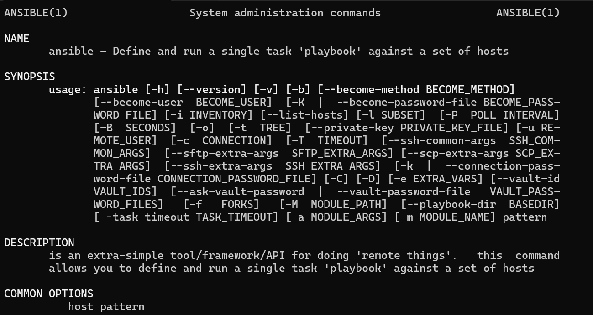
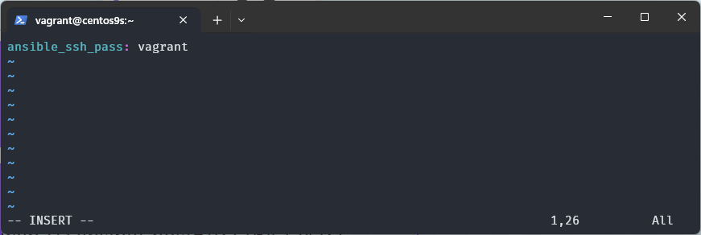
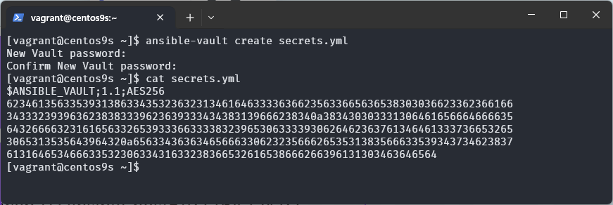
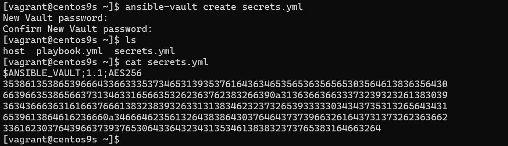
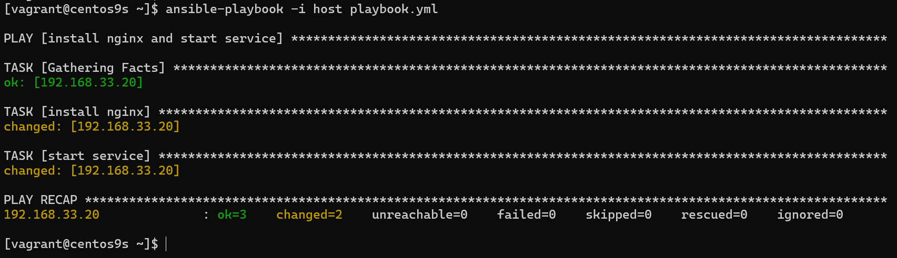
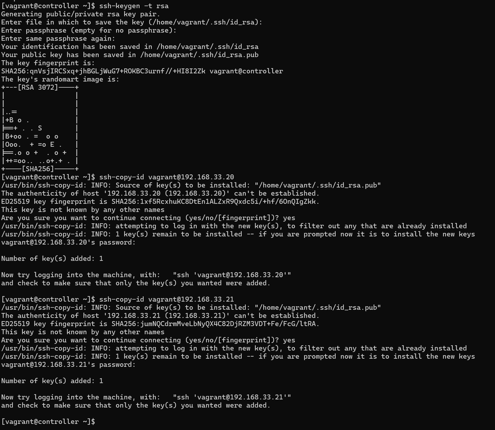
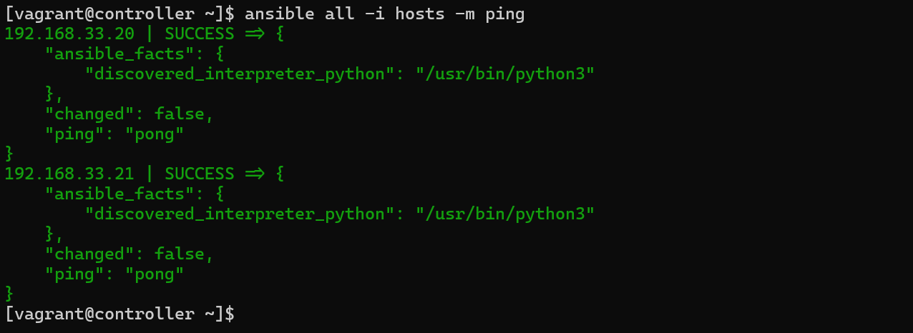
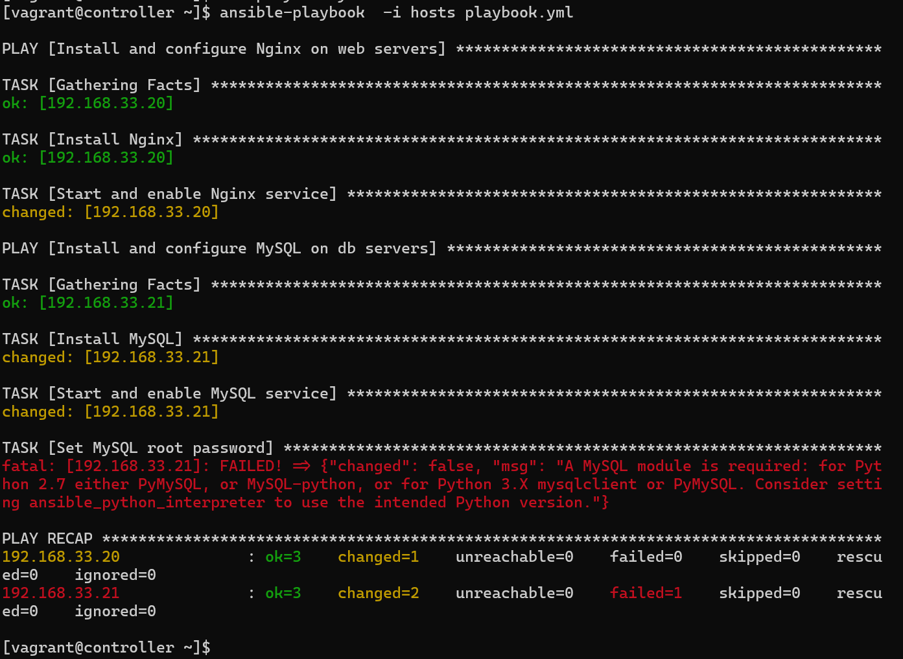

Workshop Ansible
ขั้นตอนการสร้าง Single Node LAMP Stack ด้วย Vagrant
1. การตั้งค่าโปรเจค
-
เปิดเทอร์มินัลหรือ PowerShell
-
สร้างไดเรกทอรีใหม่สำหรับโปรเจค
mkdir vagrant-ansible cd vagrant-ansible -
สร้าง Vagrantfile
code Vagrantfile
# -*- mode: ruby -*-
# vi: set ft=ruby :
# All Vagrant configuration is done below. The "2" in Vagrant.configure
# configures the configuration version (we support older styles for
# backwards compatibility). Please don't change it unless you know what
# you're doing.
$script=<<-SCRIPT
sed -i 's/PasswordAuthentication no/PasswordAuthentication yes/g' /etc/ssh/sshd_config
systemctl restart sshd.service
#sudo dnf install -y epel-release
#sudo dnf install -y ansible
SCRIPT
Vagrant.configure("2") do |config|
config.vm.box = "generic/centos9s"
config.vm.network "private_network", ip: "192.168.33.20"
#config.vm.network "public_network"
config.vm.synced_folder ".", "/vagrant"
config.vm.provider "virtualbox" do |vb|
vb.memory = "2048"
vb.cpus = 2
end
config.vm.provision "shell", inline: $script
end
Run:
vagrant up
Login ด้วย คำสั่ง vagrant
vagrant ssh
หรือ ใช้คำสั่ง ssh
ssh vagrant@192.168.33.20
ติดตั้ง Ansible แบบ manual
[vagrant@centos9s ~]$ sudo dnf install -y epel-release
[vagrant@centos9s ~]$ sudo dnf install -y ansible
Last metadata expiration check: 0:00:48 ago on Thu 01 Aug 2024 01:27:45 PM UTC.
Dependencies resolved.
========================================================================================================
Package Architecture Version Repository Size
========================================================================================================
Installing:
ansible noarch 1:7.7.0-1.el9 epel 34 M
Installing dependencies:
ansible-core x86_64 1:2.14.17-1.el9 appstream 2.6 M
git-core x86_64 2.43.5-1.el9 appstream 4.4 M
python3-cffi x86_64 1.14.5-5.el9 baseos 253 k
python3-cryptography x86_64 36.0.1-4.el9 baseos 1.2 M
python3-packaging noarch 20.9-5.el9 appstream 77 k
python3-ply noarch 3.11-14.el9 baseos 106 k
python3-pycparser noarch 2.20-6.el9 baseos 135 k
python3-pyyaml x86_64 5.4.1-6.el9 baseos 205 k
python3-resolvelib noarch 0.5.4-5.el9 appstream 34 k
python3-setuptools noarch 53.0.0-13.el9 baseos 943 k
sshpass x86_64 1.09-4.el9 appstream 28 k
Transaction Summary
========================================================================================================
Install 12 Packages
Total download size: 44 M
Installed size: 407 M
Is this ok [y/N]: y
Downloading Packages:
(1/12): python3-ply-3.11-14.el9.noarch.rpm 141 kB/s | 106 kB 00:00
(2/12): python3-cffi-1.14.5-5.el9.x86_64.rpm 268 kB/s | 253 kB 00:00
(3/12): python3-pyyaml-5.4.1-6.el9.x86_64.rpm 825 kB/s | 205 kB 00:00
(4/12): python3-pycparser-2.20-6.el9.noarch.rpm 117 kB/s | 135 kB 00:01
(5/12): python3-cryptography-36.0.1-4.el9.x86_64.rpm 530 kB/s | 1.2 MB 00:02
(6/12): python3-setuptools-53.0.0-13.el9.noarch.rpm 680 kB/s | 943 kB 00:01
(7/12): python3-packaging-20.9-5.el9.noarch.rpm 145 kB/s | 77 kB 00:00
(8/12): python3-resolvelib-0.5.4-5.el9.noarch.rpm 237 kB/s | 34 kB 00:00
(9/12): sshpass-1.09-4.el9.x86_64.rpm 217 kB/s | 28 kB 00:00
(10/12): ansible-core-2.14.17-1.el9.x86_64.rpm 1.6 MB/s | 2.6 MB 00:01
(11/12): git-core-2.43.5-1.el9.x86_64.rpm 1.5 MB/s | 4.4 MB 00:02
(12/12): ansible-7.7.0-1.el9.noarch.rpm 4.6 MB/s | 34 MB 00:07
--------------------------------------------------------------------------------------------------------
Total 2.9 MB/s | 44 MB 00:15
Running transaction check
Transaction check succeeded.
Running transaction test
Transaction test succeeded.
Running transaction
Preparing : 1/1
Installing : sshpass-1.09-4.el9.x86_64 1/12
Installing : python3-resolvelib-0.5.4-5.el9.noarch 2/12
Installing : python3-packaging-20.9-5.el9.noarch 3/12
Installing : git-core-2.43.5-1.el9.x86_64 4/12
Installing : python3-setuptools-53.0.0-13.el9.noarch 5/12
Installing : python3-pyyaml-5.4.1-6.el9.x86_64 6/12
Installing : python3-ply-3.11-14.el9.noarch 7/12
Installing : python3-pycparser-2.20-6.el9.noarch 8/12
Installing : python3-cffi-1.14.5-5.el9.x86_64 9/12
Installing : python3-cryptography-36.0.1-4.el9.x86_64 10/12
Installing : ansible-core-1:2.14.17-1.el9.x86_64 11/12
Installing : ansible-1:7.7.0-1.el9.noarch 12/12
Running scriptlet: ansible-1:7.7.0-1.el9.noarch 12/12
Verifying : python3-cffi-1.14.5-5.el9.x86_64 1/12
Verifying : python3-cryptography-36.0.1-4.el9.x86_64 2/12
Verifying : python3-ply-3.11-14.el9.noarch 3/12
Verifying : python3-pycparser-2.20-6.el9.noarch 4/12
Verifying : python3-pyyaml-5.4.1-6.el9.x86_64 5/12
Verifying : python3-setuptools-53.0.0-13.el9.noarch 6/12
Verifying : ansible-core-1:2.14.17-1.el9.x86_64 7/12
Verifying : git-core-2.43.5-1.el9.x86_64 8/12
Verifying : python3-packaging-20.9-5.el9.noarch 9/12
Verifying : python3-resolvelib-0.5.4-5.el9.noarch 10/12
Verifying : sshpass-1.09-4.el9.x86_64 11/12
Verifying : ansible-1:7.7.0-1.el9.noarch 12/12
Installed:
ansible-1:7.7.0-1.el9.noarch ansible-core-1:2.14.17-1.el9.x86_64
git-core-2.43.5-1.el9.x86_64 python3-cffi-1.14.5-5.el9.x86_64
python3-cryptography-36.0.1-4.el9.x86_64 python3-packaging-20.9-5.el9.noarch
python3-ply-3.11-14.el9.noarch python3-pycparser-2.20-6.el9.noarch
python3-pyyaml-5.4.1-6.el9.x86_64 python3-resolvelib-0.5.4-5.el9.noarch
python3-setuptools-53.0.0-13.el9.noarch sshpass-1.09-4.el9.x86_64
Complete!
[vagrant@centos9s ~]$ sudo dnf info ansible
Extra Packages for Enterprise Linux 9 - x86_64 3.4 kB/s | 4.6 kB 00:01
Installed Packages
Name : ansible
Epoch : 1
Version : 7.7.0
Release : 1.el9
Architecture : noarch
Size : 365 M
Source : ansible-7.7.0-1.el9.src.rpm
Repository : @System
From repo : epel
Summary : Curated set of Ansible collections included in addition to ansible-core
URL : https://ansible.com
License : GPL-3.0-or-later AND Apache-2.0 AND BSD-2-Clause AND BSD-3-Clause AND MIT AND MPL-2.0 AND
: PSF-2.0
Description : Ansible is a radically simple model-driven configuration management,
: multi-node deployment, and remote task execution system. Ansible works
: over SSH and does not require any software or daemons to be installed
: on remote nodes. Extension modules can be written in any language and
: are transferred to managed machines automatically.
:
: This package provides a curated set of Ansible collections included in addition
: to ansible-core.
[vagrant@centos9s ~]$ sudo dnf info ansible-core
Extra Packages for Enterprise Linux 9 - Next - x86_64 11 kB/s | 17 kB 00:01
Installed Packages
Name : ansible-core
Epoch : 1
Version : 2.14.17
Release : 1.el9
Architecture : x86_64
Size : 10 M
Source : ansible-core-2.14.17-1.el9.src.rpm
Repository : @System
From repo : appstream
Summary : SSH-based configuration management, deployment, and task execution system
URL : http://ansible.com
License : GPLv3+
Description : Ansible is a radically simple model-driven configuration management,
: multi-node deployment, and remote task execution system. Ansible works
: over SSH and does not require any software or daemons to be installed
: on remote nodes. Extension modules can be written in any language and
: are transferred to managed machines automatically.
Run คำสั่งเพื่อ อ่าน คู่มือการใช้
man ansible

Run คำสั่ง
[vagrant@centos9s ~]$ ansible --version
ansible [core 2.14.17]
config file = /etc/ansible/ansible.cfg
configured module search path = ['/home/vagrant/.ansible/plugins/modules', '/usr/share/ansible/plugins/modules']
ansible python module location = /usr/lib/python3.9/site-packages/ansible
ansible collection location = /home/vagrant/.ansible/collections:/usr/share/ansible/collections
executable location = /usr/bin/ansible
python version = 3.9.18 (main, Sep 7 2023, 00:00:00) [GCC 11.4.1 20230605 (Red Hat 11.4.1-2)] (/usr/bin/python3)
jinja version = 3.1.2
libyaml = True
เริ่มต้นการใช้งาน Ansible
คำสั่ง ใน Anible มีอยู่ด้วยกัน 2 คำสั่ง คือ ansible และ ansible-playbook มีรูปแบบในการใชงานคำสั่งดังนี้
ansible:
ansible -i <inventory_file> <host patterns> -m <module>
ansible-playbook:
ansible-playbook -i <inventory_file> <playbook_file>
Test Connection ไปยัง Host
Run คำสั่ง check connection ด้วย module ชื่อ ping
ansible localhost -m ping
โดยคำสั่ง ansible localhost -h ping เป็นการใช้ทดสอบ connectivity ไปยัง localhost สามารถแยกคำสั่งได้ดังนี้
- ansible: เครื่องมือบรรทัดคำสั่งสำหรับการรันคำสั่ง ad-hoc ด้วย Ansible
- localhost: โฮสต์เป้าหมายสำหรับคำสั่ง Ansible ในกรณีนี้คือเครื่องของเราเอง
- -m ping: ตัวเลือก -m ใช้เพื่อระบุโมดูลที่ต้องการใช้ โดย ping เป็นโมดูลง่ายๆ ของ Ansible ที่ตรวจสอบว่าเป้าหมายสามารถเข้าถึงได้หรือไม่
Result
localhost | SUCCESS => {
"changed": false,
"ping": "pong"
}
ซึ่งหมายความว่าโมดูล ping ได้ทำการติดต่อกับ localhost สำเร็จ และได้รับการตอบกลับเป็น "pong" แสดงว่าการเชื่อมต่อนั้นดี หากมีข้อผิดพลาด ข้อความที่แสดงจะช่วยให้คุณสามารถวิเคราะห์ปัญหาได้ครับ
Run คำสั่ง ด้วย module command เพื่อส่งคำสั่งที่เราต้องการ ไปทำงาน ใน server เป้าหมาย
[vagrant@centos9s ~]$ ansible localhost -m command -a "uptime"
localhost | CHANGED | rc=0 >>
13:51:41 up 33 min, 1 user, load average: 0.08, 0.05, 0.08
ผลลัพธ์ที่ได้จากคำสั่งนี้จะเป็นการแสดงระยะเวลาที่เครื่องทำงานมาตั้งแต่การเริ่มต้นเครื่อง
รายละเอียด คำสั่ง: ansible localhost -m command -a "uptime" ทำงานดังนี้:
- ansible: เครื่องมือบรรทัดคำสั่งสำหรับการรันคำสั่ง ad-hoc ด้วย Ansible
- localhost: โฮสต์เป้าหมายที่คำสั่ง Ansible จะถูกส่งไป ซึ่งในกรณีนี้คือตัวเครื่องของคุณเอง
- -m command: ตัวเลือก
-mใช้เพื่อระบุโมดูลที่ต้องการใช้ ในที่นี้คือโมดูลcommandซึ่งใช้สำหรับรันคำสั่งทั่วไป - -a "uptime": ตัวเลือก
-aใช้เพื่อระบุพารามิเตอร์ของโมดูล ในที่นี้คือคำสั่งuptimeซึ่งจะแสดงระยะเวลาที่เครื่องทำงานอยู่
กำหนดค่าของ Host สำหรับ Ansible
เพิ่ม ansible host ใน file /etc/ansible/hosts และต้องใช้สิทธิของผู้ดูแลระบบ เรียก file นี้ว่า Inventory
ls /etc/ansible
sudo vim /etc/ansible/hosts
content: /etc/ansible/hosts ต่อท้าย ของ file
[servers]
server1 ansible_host=192.168.33.20
and test ansible add hoc command
ansible -m ping servers
หรือ [vagrant@centos9s ~]$ ansible servers -i /etc/ansible/hosts -m ping
หรือ [vagrant@centos9s ~]$ ansible server1 -i /etc/ansible/hosts -m ping
Errors:
[vagrant@centos9s ~]$ ansible -m ping servers
The authenticity of host '192.168.33.20 (192.168.33.20)' can't be established.
ED25519 key fingerprint is SHA256:0pRyAhg91dyKvyciyc8HBUSDZ8eCkTh60zcecnNZFso.
This key is not known by any other names
Are you sure you want to continue connecting (yes/no/[fingerprint])? yes
server1 | UNREACHABLE! => {
"changed": false,
"msg": "Failed to connect to the host via ssh: Warning: Permanently added '192.168.33.20' (ED25519) to the list of known hosts.\r\nvagrant@192.168.33.20: Permission denied (publickey,gssapi-keyex,gssapi-with-mic,password).",
"unreachable": true
}
Error ที่เห็น เป็น Error ปรกติ เนื่องจาก ไม่สามารถ authentication ไปยังเครื่องเป้าหมายได้
การกำหนดรูปแบบของการทำ Authentication
Ansible ใช้วิธีการหลายวิธีในการทำการ authentication (การตรวจสอบสิทธิ์) กับโฮสต์ที่มันจัดการ ซึ่งวิธีที่ใช้จะขึ้นอยู่กับประเภทของการเชื่อมต่อที่คุณเลือกใช้ นี่คือวิธีการหลัก ๆ ที่ใช้ในการ authentication:
วิธีที่ 1 การใช้ SSH Key-Based Authentication
เป็นวิธีที่นิยมที่สุดในการทำการ authentication ไปยังโฮสต์:
- การตั้งค่า:
- สร้างคู่คีย์ SSH (private และ public) และคัดลอกคีย์ public ไปยังโฟลเดอร์ ~/.ssh/authorized_keys บนโฮสต์เป้าหมาย การใช้งาน: ในการเชื่อมต่อ Ansible จะใช้คีย์ private ของคุณเพื่อทำการล็อกอินไปยังโฮสต์เป้าหมาย การกำหนดค่าใน Ansible: โดยทั่วไป Ansible ใช้คีย์ส่วนตัวที่อยู่ใน ~/.ssh/id_rsa หากคุณใช้คีย์ที่ต่างออกไป คุณสามารถกำหนดค่าในไฟล์ ansible.cfg หรือระบุผ่านตัวเลือก --private-key
[vagrant@centos9s ~]$ ansible server1 -i /etc/ansible/hosts -m ping
server1 | UNREACHABLE! => {
"changed": false,
"msg": "Failed to connect to the host via ssh: vagrant@192.168.33.20: Permission denied (publickey,gssapi-keyex,gssapi-with-mic,password).",
"unreachable": true
}
วิธีที่ 2 การใช้ Password-Based Authentication
การใช้รหัสผ่านเป็นอีกทางเลือกหนึ่งในการทำการ authentication แต่ไม่เป็นที่นิยมเท่าการใช้ SSH key เพราะมันอาจจะมีความเสี่ยงด้านความปลอดภัย:
การตั้งค่า: ไม่มีการตั้งค่าเพิ่มเติมที่ต้องทำบนโฮสต์เป้าหมาย แต่คุณต้องระบุรหัสผ่านในคำสั่ง Ansible หรือในไฟล์การกำหนดค่า การใช้งาน: คุณสามารถระบุรหัสผ่านในคำสั่งหรือไฟล์การกำหนดค่า
- กำหนด username/password ใน Cli
[vagrant@centos9s ~]$ ansible -m ping servers --user vagrant --ask-pass
SSH password:
server1 | SUCCESS => {
"ansible_facts": {
"discovered_interpreter_python": "/usr/bin/python3"
},
"changed": false,
"ping": "pong"
}
Ansible จะรอให้กรอกรหัสของ user vagrant คือ vagrant
- กำหนดไว้ใน inventory
[servers]
server1 ansible_host=192.168.33.20 ansible_ssh_pass=vagrant
- encode password ไว้ใน File
[vagrant@centos9s ~]$ ansible-vault create secrets.yml
New Vault password:
Confirm New Vault password:
หลังจากนั้น จะมี Temp file ให้เรากรอกข้อมูล 
ให้กด i สำหรับ mode insert และ
เพ่ิ่ม ansible_ssh_pass: password ใน Temporary file (file ที่ คำสั่ง ansible-vault เตรียมไว้เรานั้น ใช้ Vi เป็น Editor)
ansible_ssh_pass: vagrant
ทำการบันทึก ด้วยการกด :wq!
cat secrets.yml

- content ใน file จะเป็น ascii text
ทำการ Decrypt ย้อนกลับ
[vagrant@centos9s ~]$ ansible-vault decrypt secrets.yml
Vault password:
Decryption successful
[vagrant@centos9s ~]$ cat secrets.yml
ansible_ssh_pass: vagrant
Workshop: สร้าง playbook.yml
สร้าง inventory ของ Project เอง ชื่อว่า host และ สร้าง playbook สำหรับการทำ Auto
สร้าง playbook.yml
---
# playbook.yml
- name: install nginx and start service
hosts: web
become: true
tasks:
- name: install nginx
yum: name=nginx state=present
- name: start service
service: name=nginx state=restarted
สร้าง hosts
[web]
192.168.33.20
[web:vars]
ansible_usr=vagrant
ตรวจสอบ File System ด้วยคำสั่ง ls -l ได้เห็น file ที่สร้าง
[vagrant@centos9s ~]$ ls -l
total 8
-rw-r--r--. 1 vagrant vagrant 19 Aug 1 12:19 hosts
-rw-r--r--. 1 vagrant vagrant 224 Aug 1 12:20 playbook.yml
Run
[vagrant@centos9s ~]$ ansible web -i host -m ping
192.168.33.20 | UNREACHABLE! => {
"changed": false,
"msg": "Failed to connect to the host via ssh: vagrant@192.168.33.20: Permission denied (publickey,gssapi-keyex,gssapi-with-mic,password).",
"unreachable": true
}
[vagrant@centos9s ~]$ ansible all -i host -m ping
192.168.33.20 | UNREACHABLE! => {
"changed": false,
"msg": "Failed to connect to the host via ssh: vagrant@192.168.33.20: Permission denied (publickey,gssapi-keyex,gssapi-with-mic,password).",
"unreachable": true
}
Run
ansible-playbook -i host playbook.yml
โดย default แล้ว ansible เลือกใช้วิธี ssh-key authentication แต่ ซื่งจะต้องทำการ Copy ssh-key จากเครื่อง controller ไปยัง เครื่อง servers ที่ระบุใน inventory
วิธีแรก ลองทดสอบ แบบ password authentication ส่วน user จะเป็นชื่อ user บน shell ของเครื่อง controller (user vagrant)
[web]
192.168.33.20 ansible_ssh_pass=vagrant
ลองทดสอบอีกครั้ง จะพบว่า error เปลี่ยนเป็น Success
[vagrant@centos9s ~]$ ansible all -i host -m ping
192.168.33.20 | SUCCESS => {
"ansible_facts": {
"discovered_interpreter_python": "/usr/bin/python3"
},
"changed": false,
"ping": "pong"
}
แต่สำหรับวิธีการใช้ password แบบที่กำหนดค่า password โดยตรงลงไปใน ไฟล์ invetory ทำให้เกิดความเสียงสูง ดังนั้น จะใช้ คำสั่ง ansible-value เพื่อทำการ Encrypt password โดยใช้คำสั่ง
[vagrant@centos9s ~]$ ansible-vault create secrets.yml
New Vault password:
Confirm New Vault password:
เพิ่มตัวแปร ไปยัง Temporary File (โดยใช้ VI editor)
ansible_ssh_pass: vagrant
หลังจากนั้น ansible-vaule จะencrypt password ไปเก็บไว้ใน secrets.yml
 ansible_config
[vagrant@centos9s ~]$ ansible all -i host -m ping
192.168.33.20 | SUCCESS => {
"ansible_facts": {
"discovered_interpreter_python": "/usr/bin/python3"
},
"changed": false,
"ping": "pong"
}
กลับไปที่วิธี ของ ssh key ต้องสร้าง ssh key ก่อน
ssh-keygen -t rsa
[vagrant@centos9s ~]$ ssh-keygen -t rsa
Generating public/private rsa key pair.
Enter file in which to save the key (/home/vagrant/.ssh/id_rsa):
Enter passphrase (empty for no passphrase):
Enter same passphrase again:
Your identification has been saved in /home/vagrant/.ssh/id_rsa
Your public key has been saved in /home/vagrant/.ssh/id_rsa.pub
The key fingerprint is:
SHA256:toTj+jA2qXwjwVVa3Pt7BS1wpOwHpcZZvZcjVdTRnN8 vagrant@centos9s.localdomain
The key's randomart image is:
+---[RSA 3072]----+
| . . .+. +O|
| + .o.*. .o+|
| + .Oo ...+|
| o ..o .o.ooE|
| . . o S.. .o...|
| o o + ... . |
| .* . . . . |
| ..oo= . . |
| oo.o. . |
+----[SHA256]-----+
copy public key ด้วยคำสั่ง ssh-copy-id ไปยัง server
[vagrant@centos9s ~]$ ssh-copy-id vagrant@192.168.33.20
/usr/bin/ssh-copy-id: INFO: Source of key(s) to be installed: "/home/vagrant/.ssh/id_rsa.pub"
/usr/bin/ssh-copy-id: INFO: attempting to log in with the new key(s), to filter out any that are already installed
/usr/bin/ssh-copy-id: INFO: 1 key(s) remain to be installed -- if you are prompted now it is to install the new keys
vagrant@192.168.33.20's password:
Number of key(s) added: 1
Now try logging into the machine, with: "ssh 'vagrant@192.168.33.20'"
and check to make sure that only the key(s) you wanted were added.
อีกขั้นตอน
[web]
192.168.33.20 ansible_ssh_private_key_file=~/.ssh/id_rsa
คราวนี้ลองทดสอบคำสั่ง อีกครั้ง
[vagrant@centos9s ~]$ ansible all -i host -m ping
192.168.33.20 | SUCCESS => {
"ansible_facts": {
"discovered_interpreter_python": "/usr/bin/python3"
},
"changed": false,
"ping": "pong"
}
หรือ ให้ระบุ ใน Ansible config file (ansible.cfg)
[vagrant@centos9s ~]$ sudo vim /etc/ansible/ansible.cfg
[defaults]
private_key_file =~/.ssh/id_rsa
Result
[vagrant@centos9s ~]$ ansible all -i host -m ping
192.168.33.20 | SUCCESS => {
"ansible_facts": {
"discovered_interpreter_python": "/usr/bin/python3"
},
"changed": false,
"ping": "pong"
}

[vagrant@centos9s ~]$ ansible-playbook -i host playbook.yml

[vagrant@centos9s ~]$ ss -tulpn
Netid State Recv-Q Send-Q Local Address:Port Peer Address:Port Process
udp UNCONN 0 0 127.0.0.1:323 0.0.0.0:*
udp UNCONN 0 0 [::1]:323 [::]:*
tcp LISTEN 0 511 0.0.0.0:80 0.0.0.0:*
tcp LISTEN 0 128 0.0.0.0:22 0.0.0.0:*
tcp LISTEN 0 511 [::]:80 [::]:*
tcp LISTEN 0 128 [::]:22 [::]:*
[vagrant@centos9s ~]$
vagrant halt
vagrant destroy
แก้ไขfile Vagrantfile
# -*- mode: ruby -*-
# vi: set ft=ruby :
# All Vagrant configuration is done below. The "2" in Vagrant.configure
# configures the configuration version (we support older styles for
# backwards compatibility). Please don't change it unless you know what
# you're doing.
$script=<<-SCRIPT
sed -i 's/PasswordAuthentication no/PasswordAuthentication yes/g' /etc/ssh/sshd_config
systemctl restart sshd.service
SCRIPT
Vagrant.configure("2") do |config|
# The most common configuration options are documented and commented below.
# For a complete reference, please see the online documentation at
# https://docs.vagrantup.com.
config.vm.box = "generic/centos9s"
config.vm.define "controller" do |control|
control.vm.hostname = "controller"
control.vm.network "private_network", ip: "192.168.33.10"
control.vm.provider "virtualbox" do |vb|
vb.memory = "1024"
vb.cpus = 1
end
control.vm.provision "shell", inline: <<-SCRIPT
sudo hostnamectl set-hostname controller
SCRIPT
end
config.vm.define "web" do |web|
web.vm.hostname = "controller"
web.vm.network "private_network", ip: "192.168.33.20"
web.vm.provider "virtualbox" do |vb|
vb.memory = "2048"
vb.cpus = 2
end
web.vm.provision "shell", inline: <<-SCRIPT
sudo hostnamectl set-hostname web
SCRIPT
end
config.vm.define "db" do |db|
db.vm.hostname = "controller"
db.vm.network "private_network", ip: "192.168.33.21"
db.vm.provider "virtualbox" do |vb|
vb.memory = "4096"
vb.cpus = 2
end
db.vm.provision "shell", inline: <<-SCRIPT
sudo hostnamectl set-hostname db
SCRIPT
end
config.vm.synced_folder ".", "/vagrant"
config.vm.provision "shell", inline: $script
end
vagrant status
vagrant up
PS C:\Users\sysadmin\VagrantDev\Centos9s> vagrant status
Current machine states:
controller not created (virtualbox)
web not created (virtualbox)
db not created (virtualbox)
This environment represents multiple VMs. The VMs are all listed
above with their current state. For more information about a specific
VM, run `vagrant status NAME`.
PS C:\Users\sysadmin\VagrantDev\Centos9s> vagrant up
Bringing machine 'controller' up with 'virtualbox' provider...
Bringing machine 'web' up with 'virtualbox' provider...
Bringing machine 'db' up with 'virtualbox' provider...
==> controller: Importing base box 'generic/centos9s'...
Progress: 40%
...
การเข้าถึง vm ให้ใช้ คำสั่ง vagrant ssh ตามด้วยชื่อ
vagrant ssh controller
vagrant ssh web
vagrant ssh db
playbook.yml
---
# playbook.yml
- name: install nginx and start service
hosts: web
become: true
tasks:
- name: install nginx
yum: name=nginx state=present
- name: start service
service: name=nginx state=restarted
- name: install nginx and start service
hosts: db
become: true
tasks:
- name: install db
yum: name=mysql state=present
- name: start service
service: name=mysql state=restarted


[vagrant@controller ~]$ ansible-playbook -i hosts playbook.yml -vvv
---
- name: Install and configure Nginx on web servers
hosts: web
become: true
tasks:
- name: Install Nginx
yum:
name: nginx
state: present
- name: Start and enable Nginx service
service:
name: nginx
state: started
enabled: true
- name: Install and configure MySQL on db servers
hosts: db
become: true
vars:
mysql_root_password: password
tasks:
- name: Install MySQL
yum:
name: mysql-server
state: present
- name: Start and enable MySQL service
service:
name: mysqld
state: started
enabled: true
- name: Set MySQL root password
mysql_user:
name: root
password: "{{ mysql_root_password }}"
host: localhost
state: present
Key Changes:
Naming: Changed play names to better describe their purposes.
Service Management: Used state: started instead of state: restarted and added enabled: true to ensure the services start on boot.
MySQL Installation: Changed the package name from mysql to mysql-server (commonly used package name for MySQL).
MySQL Service Name: Changed the service name to mysqld (typical name for MySQL service).
MySQL Root Password: Added a task to set the MySQL root password using the mysql_user module.
Feel free to adj

- name: Install and configure MySQL on db servers
hosts: db
become: true
vars:
mysql_root_password: password
ansible_python_interpreter: /usr/bin/python3
sql_file_path: create_tables.sql # Update this path to your actual SQL file location
tasks:
- name: Install MySQL
yum:
name: mysql-server
state: present
- name: Start and enable MySQL service
service:
name: mysqld
state: started
enabled: true
- name: Install python
yum:
name: python
state: present
- name: Install python-pip
yum:
name: python-pip
state: present
- name: Install PyMySQL Python library
pip:
name: PyMySQL
state: present
- name: Set MySQL root password
mysql_user:
name: root
password: "{{ mysql_root_password }}"
host: localhost
state: present
vars:
ansible_python_interpreter: /usr/bin/python3
- name: Create tables from SQL file
mysql_db:
name: mydatabase
state: import
target: "{{ sql_file_path }}"
login_user: root
login_password: "{{ mysql_root_password }}"
login_host: localhost
CREATE DATABASE IF NOT EXISTS mydatabase;
USE mydatabase;
CREATE TABLE IF NOT EXISTS users (
id INT AUTO_INCREMENT PRIMARY KEY,
username VARCHAR(50) NOT NULL,
password VARCHAR(255) NOT NULL
);
CREATE TABLE IF NOT EXISTS orders (
id INT AUTO_INCREMENT PRIMARY KEY,
user_id INT,
order_date DATE,
FOREIGN KEY (user_id) REFERENCES users(id)
);
- name: Install and configure MySQL on db servers
hosts: db
become: true
vars:
mysql_root_password: password
ansible_python_interpreter: /usr/bin/python3
sql_file_path: create_tables.sql # Update this path to your actual SQL file location
tasks:
- name: Install MySQL
yum:
name: mysql-server
state: present
- name: Start and enable MySQL service
service:
name: mysqld
state: started
enabled: true
- name: Install python
yum:
name: python
state: present
- name: Install python-pip
yum:
name: python-pip
state: present
- name: Install PyMySQL Python library
pip:
name: PyMySQL
state: present
- name: Set MySQL root password
mysql_user:
name: root
password: "{{ mysql_root_password }}"
host: localhost
state: present
vars:
ansible_python_interpreter: /usr/bin/python3
- name: Create tables from SQL file
mysql_db:
name: mydatabase
state: import
target: "{{ sql_file_path }}"
login_user: root
login_password: "{{ mysql_root_password }}"
login_host: localhost